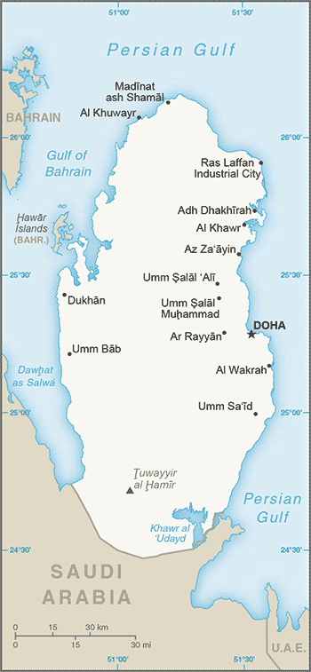
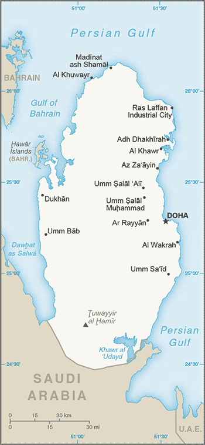

Middle East :: QATAR
Introduction :: QATAR
-
Ruled by the Al Thani family since the mid-1800s, Qatar within the last 60 years transformed itself from a poor British protectorate noted mainly for pearling into an independent state with significant oil and natural gas revenues. The continuous siphoning off of petroleum revenue through the mid-1990s by Qatari amirs permanently residing in Europe had stunted Qatar’s economic growth. Former amir HAMAD bin Khalifa Al Thani, who overthrew his father in a bloodless coup in 1995, ushered in wide-sweeping political and media reforms, unprecedented economic investment, and a growing Qatari regional leadership role, in part through the creation of the pan-Arab satellite news network Al-Jazeera and Qatar's mediation of some regional conflicts. In the 2000s, Qatar resolved its longstanding border disputes with both Bahrain and Saudi Arabia and by 2007 had attained the highest per capita income in the world. Qatar did not experience domestic unrest or violence like that seen in other Near Eastern and North African countries in 2010-11, due in part to its immense wealth. Since the outbreak of regional unrest, however, Doha has prided itself on its support for many of these popular revolutions, particularly in Libya and Syria, although to the detriment of Qatar’s relations with Bahrain, Saudi Arabia, and the United Arab Emirates (UAE), which temporarily recalled their respective ambassadors from Qatar. In mid-2013, HAMAD transferred power to his 33 year-old son, the current Amir TAMIM bin Hamad - a peaceful abdication rare in the history of Arab Gulf states. TAMIM oversaw a warming of Qatar’s relations with Bahrain, Saudi Arabia, and the UAE by later in 2014 and prioritized improving the domestic welfare of Qataris, including establishing advanced healthcare and education systems and expanding the country's infrastructure in anticipation of Doha's hosting of the 2022 World Cup.
Geography :: QATAR
-
Middle East, peninsula bordering the Persian Gulf and Saudi Arabia25 30 N, 51 15 EMiddle Easttotal: 11,586 sq kmland: 11,586 sq kmwater: 0 sq kmcountry comparison to the world: 166almost twice the size of Delaware; slightly smaller than Connecticuttotal: 87 kmborder countries (1): Saudi Arabia 87 km563 kmterritorial sea: 12 nmcontiguous zone: 24 nmexclusive economic zone: as determined by bilateral agreements or the median linearid; mild, pleasant winters; very hot, humid summersmostly flat and barren desertmean elevation: 28 melevation extremes: lowest point: Persian Gulf 0 mhighest point: Tuwayyir al Hamir 103 mpetroleum, natural gas, fishagricultural land: 5.6%arable land 1.1%; permanent crops 0.2%; permanent pasture 4.3%forest: 0%other: 94.4% (2011 est.)130 sq km (2012)most of the population is clustered in or around the capital of Doha on the eastern side of the peninsulahaze, dust storms, sandstorms commonlimited natural freshwater resources are increasing dependence on large-scale desalination facilitiesparty to: Biodiversity, Climate Change, Climate Change-Kyoto Protocol, Desertification, Endangered Species, Hazardous Wastes, Law of the Sea, Ozone Layer Protection, Ship Pollutionsigned, but not ratified: none of the selected agreementsthe peninsula occupies a strategic location in the central Persian Gulf near major petroleum deposits
People and Society :: QATAR
-
2,258,283 (July 2016 est.)country comparison to the world: 144noun: Qatari(s)adjective: QatariArab 40%, Indian 18%, Pakistani 18%, Iranian 10%, other 14%Arabic (official), English commonly used as a second languageMuslim 77.5%, Christian 8.5%, other (includes mainly Hindu and other Indian religions) 14% (2004 est.)0-14 years: 12.57% (male 143,859/female 140,027)15-24 years: 12.62% (male 206,775/female 78,271)25-54 years: 70.45% (male 1,321,973/female 269,072)55-64 years: 3.41% (male 59,418/female 17,578)65 years and over: 0.94% (male 13,610/female 7,700) (2016 est.)total dependency ratio: 20.1%youth dependency ratio: 18.6%elderly dependency ratio: 1.4%potential support ratio: 70.4% (2015 est.)total: 33 yearsmale: 24.1 yearsfemale: 28.1 years (2016 est.)country comparison to the world: 902.64% (2016 est.)country comparison to the world: 169.7 births/1,000 population (2016 est.)country comparison to the world: 2011.5 deaths/1,000 population (2016 est.)country comparison to the world: 22618.2 migrant(s)/1,000 population (2016 est.)country comparison to the world: 1most of the population is clustered in or around the capital of Doha on the eastern side of the peninsulaurban population: 99.2% of total population (2015)rate of urbanization: 6.02% annual rate of change (2010-15 est.)DOHA (capital) 718,000 (2015)at birth: 1.02 male(s)/female0-14 years: 1.03 male(s)/female15-24 years: 2.64 male(s)/female25-54 years: 4.91 male(s)/female55-64 years: 3.38 male(s)/female65 years and over: 1.71 male(s)/femaletotal population: 3.41 male(s)/female (2016 est.)13 deaths/100,000 live births (2015 est.)country comparison to the world: 166total: 6.2 deaths/1,000 live birthsmale: 6.4 deaths/1,000 live birthsfemale: 6 deaths/1,000 live births (2016 est.)country comparison to the world: 165total population: 78.7 yearsmale: 76.7 yearsfemale: 80.8 years (2016 est.)country comparison to the world: 541.9 children born/woman (2016 est.)country comparison to the world: 13538% (2012)2.2% of GDP (2014)country comparison to the world: 1897.74 physicians/1,000 population (2010)1.2 beds/1,000 population (2012)improved:urban: 100% of populationrural: 100% of populationtotal: 100% of populationunimproved:urban: 0% of populationrural: 0% of populationtotal: 0% of population (2015 est.)improved:urban: 98% of populationrural: 98% of populationtotal: 98% of populationunimproved:urban: 2% of populationrural: 2% of populationtotal: 2% of population (2015 est.)NANANA41% (2014)country comparison to the world: 163.5% of GDP (2014)country comparison to the world: 154definition: age 15 and over can read and writetotal population: 97.3%male: 97.4%female: 96.8% (2015 est.)total: 13 yearsmale: 13 yearsfemale: 14 years (2011)total: 1.1%male: 0.4%female: 6.2% (2013 est.)country comparison to the world: 134
Government :: QATAR
-
conventional long form: State of Qatarconventional short form: Qatarlocal long form: Dawlat Qatarlocal short form: Qatarnote: closest approximation of the native pronunciation is gattar or cottaretymology: the origin of the name is uncertain, but it dates back at least 2,000 years since a term "Catharrei" was used to describe the inhabitants of the peninsula by Pliny the Elder (1st century A.D.), and a "Catara" peninsula is depicted on a map by Ptolemy (2nd century A.D.)absolute monarchyname: Dohageographic coordinates: 25 17 N, 51 32 Etime difference: UTC+3 (8 hours ahead of Washington, DC, during Standard Time)8 municipalities (baladiyat, singular - baladiyah); Ad Dawhah, Al Khawr wa adh Dhakhirah, Al Wakrah, Ar Rayyan, Ash Shamal, Ash Shihaniyah, Az Za'ayin, Umm Salal3 September 1971 (from the UK)National Day, 18 December (1878), anniversary of Al Thani family accession to the throne; Independence Day, 3 September (1971)previous 1972 (provisional); latest drafted 2 July 2002, approved by referendum 29 April 2003, endorsed 8 June 2004, effective 9 June 2005 (2016)mixed legal system of civil law and Islamic law (in family and personal matters)has not submitted an ICJ jurisdiction declaration; non-party state to the ICCtcitizenship by birth: nocitizenship by descent only: the father must be a citizen of Qatardual citizenship recognized: noresidency requirement for naturalization: 20 years; 15 years if an Arab national18 years of age; universalchief of state: Amir TAMIM bin Hamad Al Thani (since 25 June 2013)head of government: Prime Minister ABDALLAH bin Nasir bin Khalifa Al Thani (since 26 June 2013); Deputy Prime Minister Ahmad bin Abdallah al-MAHMUD (since 20 September 2011)cabinet: Council of Ministers appointed by the amirelections/appointments: the monarchy is hereditary; prime minister and deputy prime minister appointed by the amirdescription: unicameral Advisory Council or Majlis al-Shura (15 seats; members appointed by the monarch); note - the 2003 constitutional referendum called for the election of 30 members, however; the first election scheduled for 2013 was postponed and the current term was initially extended until 2016, but in June 2016, the Amir extended it until at least 2019note: although the Advisory Council has limited legislative authority to draft and approve laws, the Amir has final vote on all legislation; Qatar's first legislative elections were expected to be held in 2013, but HAMAD postponed them in a final legislative act prior to handing over power to TAMIM; in principle, the public would elect 30 members and the Amir would appoint 15; the Advisory Council would have authority to approve the national budget, hold ministers accountable through no-confidence votes, and propose legislation; the 29-member Central Municipal Council - first elected in 1999 - has limited consultative authority aimed at improving municipal services; members elected for a 4-year term; next election scheduled for May 2019highest court(s): Supreme Court or Court of Cassation (consists of the court president and several judges); Supreme Constitutional Court (consists of the chief justice and 6 members)judge selection and term of office: Supreme Court judges nominated by the Supreme Judiciary Council, a 9-member independent body consisting of judiciary heads appointed by the Amir; judges appointed for 3-year renewable terms; Supreme Constitutional Court members nominated by the Supreme Judiciary Council and appointed by the monarch; term of appointment NAsubordinate courts: Courts of Appeal; Administrative Court; courts of first instance; sharia courts; Courts of Justice; Qatar International Court and Dispute Resolution Center, established in 2009, provides dispute services for institutions and bodies in Qatar, as well as internationallypolitical parties are bannednoneABEDA, AFESD, AMF, CAEU, CD, CICA (observer), EITI (implementing country), FAO, G-77, GCC, IAEA, IBRD, ICAO, ICC (national committees), ICRM, IDA, IDB, IFAD, IFC, IFRCS, IHO, ILO, IMF, IMO, IMSO, Interpol, IOC, IOM (observer), IPU, ISO, ITSO, ITU, LAS, MIGA, NAM, OAPEC, OAS (observer), OIC, OIF, OPCW, OPEC, PCA, UN, UNCTAD, UNESCO, UNIDO, UNIFIL, UNWTO, UPU, WCO, WHO, WIPO, WMO, WTOchief of mission: Ambassador Muhammad bin Jaham Abd al-Aziz al-KUWARI (since 10 March 2014)chancery: 2555 M Street NW, Washington, DC 20037telephone: [1] (202) 274-1600FAX: [1] (202) 237-0682consulate(s) general: Houston, Los Angeleschief of mission: Ambassador Dana Shell SMITH (since 8 September 2014)embassy: 22 February Road, Al Luqta District, Dohamailing address: P. O. Box 2399, Dohatelephone: [974] 4496-6000FAX: [974] 4488-4298maroon with a broad white serrated band (nine white points) on the hoist side; maroon represents the blood shed in Qatari wars, white stands for peace; the nine-pointed serrated edge signifies Qatar as the ninth member of the "reconciled emirates" in the wake of the Qatari-British treaty of 1916note: the other eight emirates are the seven that compose the UAE and Bahrain; according to some sources, the dominant color was formerly red, but this darkened to maroon upon exposure to the sun and the new shade was eventually adopteda maroon field surmounted by a white serrated band with nine white points; national colors: maroon, whitename: "Al-Salam Al-Amiri" (The Amiri Salute)lyrics/music: Sheikh MUBARAK bin Saif al-Thani/Abdul Aziz Nasser OBAIDANnote: adopted 1996; anthem first performed that year at a meeting of the Gulf Cooperative Council hosted by Qatar
Economy :: QATAR
-
Qatar has prospered in the last several years with continued high real GDP growth, but low oil prices have dampened the outlook. Qatar was the only Gulf Cooperation Council member that avoided a budget deficit in 2015, but it projects a $12.8 billion deficit, 6% of GDP in 2016.GDP is driven largely by the oil and gas sector; however, growth in manufacturing, construction, and financial services have lifted the non-oil sectors to just over half of Qatar’s nominal GDP. Economic policy is focused on sustaining Qatar's non-associated natural gas reserves and increasing private and foreign investment in non-energy sectors, but oil and gas still account for roughly 92% of export earnings, and 56% of government revenues. Oil and gas have made Qatar the world's highest per-capita income country and the country with the lowest unemployment. Proved oil reserves in excess of 25 billion barrels should enable continued output at current levels for about 56 years. Qatar's proved reserves of natural gas exceed 25 trillion cubic meters, about 13% of the world total and third largest in the world.Qatar's successful 2022 World Cup bid is accelerating large-scale infrastructure projects such as its metro system, light rail system, construction of a new port, roads, stadiums and related sporting infrastructure.$319.8 billion (2015 est.)$309.7 billion (2014 est.)$297.8 billion (2013 est.)note: data are in 2015 US dollarscountry comparison to the world: 52$185.4 billion (2015 est.)3.3% (2015 est.)4% (2014 est.)4.6% (2013 est.)country comparison to the world: 77$132,100 (2015 est.)$138,600 (2014 est.)$145,600 (2013 est.)note: data are in 2015 US dollarscountry comparison to the world: 147% of GDP (2015 est.)57.6% of GDP (2014 est.)59.7% of GDP (2013 est.)country comparison to the world: 3household consumption: 22%government consumption: 19.4%investment in fixed capital: 37.2%investment in inventories: 1.5%exports of goods and services: 55.4%imports of goods and services: -35.5% (2015 est.)agriculture: 0.1%industry: 55.7%services: 44.1% (2015 est.)fruits, vegetables; poultry, dairy products, beef; fishliquefied natural gas, crude oil production and refining, ammonia, fertilizers, petrochemicals, steel reinforcing bars, cement, commercial ship repair2% (2015 est.)country comparison to the world: 1101.644 million (2015 est.)country comparison to the world: 1270.4% (2015 est.)0.4% (2014 est.)country comparison to the world: 2NA%lowest 10%: 1.3%highest 10%: 35.9% (2007)revenues: $57.45 billionexpenditures: $56.44 billion (2015 est.)31% of GDP (2015 est.)country comparison to the world: 780.5% of GDP (2015 est.)country comparison to the world: 2941.6% of GDP (2015 est.)31.9% of GDP (2014 est.)country comparison to the world: 1081 April - 31 March1.7% (2015 est.)3.3% (2014 est.)country comparison to the world: 1144.5% (31 December 2012)4.93% (31 December 2011)country comparison to the world: 834.5% (31 December 2015 est.)4.5% (31 December 2014 est.)country comparison to the world: 148$34.87 billion (31 December 2015 est.)$34.14 billion (31 December 2014 est.)country comparison to the world: 58$155.8 billion (31 December 2015 est.)$138.5 billion (31 December 2014 est.)country comparison to the world: 48$200.6 billion (31 December 2015 est.)$168.9 billion (31 December 2014 est.)country comparison to the world: 42$126.4 billion (31 December 2015 est.)$125.4 billion (31 December 2014 est.)$123.6 billion (31 December 2013 est.)country comparison to the world: 37$9.146 billion (2015 est.)$49.66 billion (2014 est.)country comparison to the world: 19$77.29 billion (2015 est.)$126.7 billion (2014 est.)country comparison to the world: 39liquefied natural gas (LNG), petroleum products, fertilizers, steelJapan 25.4%, India 14.6%, China 8.4%, UAE 6.8%, Singapore 5.6%, UK 5.5%, Thailand 4.2% (2015)$28.5 billion (2015 est.)$31.15 billion (2014 est.)country comparison to the world: 63machinery and transport equipment, food, chemicalsChina 11.9%, US 11.3%, UAE 9%, Germany 7.7%, Japan 6.7%, UK 5.9%, Italy 4.6%, Saudi Arabia 4.4% (2015)$37.26 billion (31 December 2015 est.)$43.32 billion (31 December 2014 est.)country comparison to the world: 45$141.6 billion (31 December 2015 est.)$138.2 billion (31 December 2014 est.)country comparison to the world: 40$34.53 billion (31 December 2015 est.)$33.46 billion (31 December 2014 est.)country comparison to the world: 64$49.73 billion (31 December 2015 est.)$45.71 billion (31 December 2014 est.)country comparison to the world: 42Qatari rials (QAR) per US dollar -3.64 (2015 est.)3.64 (2014 est.)3.64 (2013 est.)3.64 (2012 est.)3.64 (2011 est.)
Energy :: QATAR
-
population without electricity: 45,165electrification - total population: 98%electrification - urban areas: 98%electrification - rural areas: 93% (2012)36 billion kWh (2014 est.)country comparison to the world: 6134 billion kWh (2014 est.)country comparison to the world: 610 kWh (2013 est.)country comparison to the world: 1860 kWh (2013 est.)country comparison to the world: 1928.8 million kW (2014 est.)country comparison to the world: 6398.5% of total installed capacity (2012 est.)country comparison to the world: 530% of total installed capacity (2012 est.)country comparison to the world: 1690% of total installed capacity (2012 est.)country comparison to the world: 1951.5% of total installed capacity (2012 est.)country comparison to the world: 871.532 million bbl/day (2015 est.)country comparison to the world: 171.303 million bbl/day (2013 est.)country comparison to the world: 120 bbl/day (2013 est.)country comparison to the world: 11625 billion bbl (1 January 2016 es)country comparison to the world: 13286,800 bbl/day (2013 est.)country comparison to the world: 42238,000 bbl/day (2014 est.)country comparison to the world: 54542,900 bbl/day (2013 est.)country comparison to the world: 112,555 bbl/day (2013 est.)country comparison to the world: 213160 billion cu m (2014 est.)country comparison to the world: 441.07 billion cu m (2014 est.)country comparison to the world: 29118.9 billion cu m (2014 est.)country comparison to the world: 20 cu m (2013 est.)country comparison to the world: 12424.53 trillion cu m (1 January 2016 es)country comparison to the world: 392 million Mt (2013 est.)country comparison to the world: 40
Communications :: QATAR
-
total subscriptions: 428,858subscriptions per 100 inhabitants: 20 (July 2015 est.)country comparison to the world: 101total: 3.61 millionsubscriptions per 100 inhabitants: 164 (July 2015 est.)country comparison to the world: 134general assessment: modern system centered in Dohadomestic: combined fixed-line and mobile-cellular telephone subscribership exceeds 180 telephones per 100 personsinternational: country code - 974; landing point for the Fiber-Optic Link Around the Globe (FLAG) submarine cable network that provides links to Asia, Middle East, Europe, and the US; tropospheric scatter to Bahrain; microwave radio relay to Saudi Arabia and the UAE; satellite earth stations - 2 Intelsat (1 Atlantic Ocean and 1 Indian Ocean) and 1 Arabsat (2015)TV and radio broadcast licensing and access to local media markets are state controlled; home of the satellite TV channel Al-Jazeera, which was originally owned and financed by the Qatari government but has evolved to independent corporate status; Al-Jazeera claims editorial independence in broadcasting; local radio transmissions include state, private, and international broadcasters on FM frequencies in Doha; in August 2013, Qatar's satellite company Es'hailSat launched its first communications satellite Es'hail 1 (manufactured in the US), which entered commercial service in December 2013 to provide improved television broadcasting capability and expand availability of voice and internet; Es'hailSat released a request for proposals in March 2014 for its second satellite to launch in 2016 (2014).qatotal: 2.039 millionpercent of population: 92.9% (July 2015 est.)country comparison to the world: 95
Transportation :: QATAR
-
number of registered air carriers: 2inventory of registered aircraft operated by air carriers: 199annual passenger traffic on registered air carriers: 25,263,224annual freight traffic on registered air carriers: 7,563,307,390 mt-km (2015)A7 (2016)6 (2013)country comparison to the world: 178total: 4over 3,047 m: 31,524 to 2,437 m: 1 (2013)total: 2914 to 1,523 m: 1under 914 m: 1 (2013)1 (2013)condensate 288 km; condensate/gas 221 km; gas 2,383 km; liquid petroleum gas 90 km; oil 745 km; refined products 103 km (2013)total: 9,830 km (2010)country comparison to the world: 136total: 28by type: bulk carrier 3, chemical tanker 2, container 13, liquefied gas 6, petroleum tanker 4foreign-owned: 6 (Kuwait 6)registered in other countries: 35 (Liberia 5, Marshall Islands 29, Panama 1) (2010)country comparison to the world: 87major seaport(s): Doha, Mesaieed (Umaieed), Ra's LaffanLNG terminal(s) (export): Ras Laffan
Military and Security :: QATAR
-
Qatari Emiri Land Force (QELF), Qatari Emiri Navy (QEN), Qatari Emiri Air Force (QEAF) (2013)conscription for males aged 18-35; 4-month general obligation, 3 months for graduates (2014)
Transnational Issues :: QATAR
-
nonestateless persons: 1,200 (2015)current situation: Qatar is a destination country for men, women, and children subjected to forced labor, and, to a much lesser extent, forced prostitution; the predominantly foreign workforce migrates to Qatar legally for low- and semi-skilled work but often experiences situations of forced labor, including debt bondage, delayed or nonpayment of salaries, confiscation of passports, abuse, hazardous working conditions, and squalid living arrangements; foreign female domestic workers are particularly vulnerable to trafficking because of their isolation in private homes and lack of protection under Qatari labor laws; some women who migrate for work are also forced into prostitutiontier rating: Tier 2 Watch List – Qatar does not fully comply with the minimum standards for the elimination of trafficking; however, it is making significant efforts to do so; the government investigated 11 trafficking cases but did not prosecute or convict any offenders, including exploitative employers and recruitment agencies; the primary solution for resolving labor violations was to transfer a worker’s sponsorship to a new employer with minimal effort to investigate whether a forced labor violation had occurred; authorities increased their efforts to protect some trafficking victims, although many victims of forced labor, particularly domestic workers, remained unidentified and unprotected and were sometimes punished for immigration violations or running away from an employer or sponsor; authorities visited worksites throughout the country to meet and educate workers and employers on trafficking regulations, but the government failed to abolish or reform the sponsorship system, perpetuating Qatar’s forced labor problem (2015)